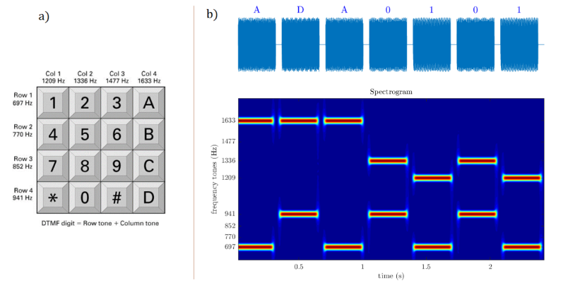
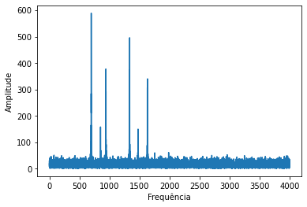
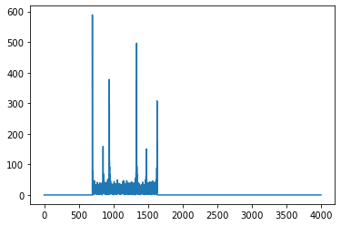
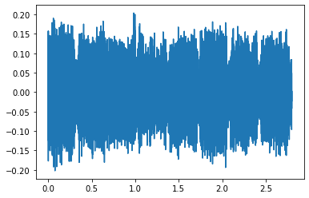
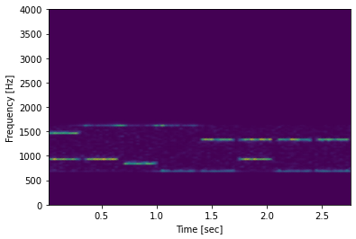
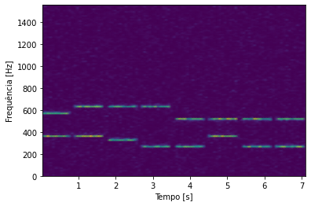

A sinalização DTMF1 (do inglês Dual-Tone Multi-Frequency) é uma técnica que permite codificar os dígitos 0 – 9 as letras A, B, C, D e os caracteres “*” e “#”. DTMF é usada nos telefones digitais e em alguns teclados alfanuméricos, permitindo que as teclas acionadas a cada instante sejam codificadas mediante a combinação (soma) de tons de duas frequências específicas. Ao pressionar uma tecla específica será emitido um som audível contendo as 2 frequências determinadas pela linha e coluna da tecla acionada (ver Figura 1).
Em base aos conceitos apresentados anteriormente e usando técnicas de processamento digital de sinais estudadas em sala de aula:
a) Obtenha uma visualização que permita determinar a sequência de teclas acionadas supondo que o sinal de áudio correspondente foi gravado no arquivo Unknown_DTMF01.wav (disponibilizado no Sigaa); identifique a sequência de teclas acionadas.
» #Importando arquivo
» x, fs = sf.read('Unknown_DTMF01.wav')
» f, t, Sxx = sig.spectrogram(x, fs)
» plt.pcolormesh(t, f, Sxx, shading='gouraud')
» plt.ylabel('Frequência [Hz]')
» plt.xlabel('Tempo [s]')
» plt.show()
tecla 1 -> 1477 + 941 = #
tecla 2 -> 1633 + 941 = D
tecla 3 -> 1633 + 852 = C
tecla 4 -> 1633 + 697 = A
tecla 5 -> 1336 + 697 = 2
tecla 6 -> 1336 + 941 = 0
tecla 7 -> 1336 + 697 = 2
tecla 8 -> 1336 + 697 = 2
#DCA2022
b) Implemente algum processamento que permita detectar/estimar os tempos de ocorrência correspondentes ao acionamento de cada tecla; Nota: O sinal de áudio disponibilizado contém ruido o que dificulta a análise do sinal no domínio tempo.
Os tempos de acionamento de cada tecla podem ser definidos usando um dos parâmetros da função do espectograma, o Sxx.
» amplitude = Sxx.sum(axis=0)
» plt.plot(t, amplitude)
» plt.ylabel('Amplitude')
» plt.xlabel('Tempo [s]')
» plt.show()
c) Proponha e implemente algum processamento que permita recuperar o sinal de áudio correspondente à sequência de teclas acionadas, mas visando eliminar o ruído contido no sinal original.
Para eliminar o ruído contido no sinal, é preciso implementar um filtro. Filtro são dispositivos seletores de frequências utilizados para eliminar as frequências não desejadas de um sinal de entrada. Para essa finalidade, foi implementado um filtro passa-banda (ou passa-faixa), que permite a passagem das frequências de uma certa faixa e rejeita (atenua) as frequências fora dessa faixa.
» fc = 1/fs
» X = np.fft.fft(x)
» F = np.fft.fftfreq(len(X), fc)
» mask = F >= 0
» plt.plot(F[mask], abs(X)[mask])
» plt.xlabel('Frequência')
» plt.ylabel('Amplitude')
» plt.show()
» def passa_banda(F , X):
» for i in range (len(X)):
» if (F[i] < 697) or (F[i] > 1633):
» X[i] = 0
» return X
» XFil = passa_banda(F, X)
» plt.plot(F[F >= 0], abs(XFil)[F >= 0])
» plt.show()
» inverseXFil = np.fft.ifft(XFil)
» plt.plot(tempo, inverseXFil.real)
» plt.show()
» sf.write('novo.wav', inverseXFil.real, fs)
» f, t, Sxx = sig.spectrogram(inverseXFil.real, fs)
» plt.pcolormesh(t, f, Sxx, shading='gouraud')
» plt.ylabel('Frequency [Hz]')
» plt.xlabel('Time [sec]')
» plt.show()




Suponha que a mesma sequência de letras é acionada num teclado alfanumérico, mas que o sinal de áudio foi digitalizado usando uma frequência de amostragem (fs) de 3 110 Hz e um filtro antialising com uma frequência de corte de 4 kHz.
a) O valor de fs = 3 110 Hz seria um valor adequado para a aplicação de DFTM? Justifique a sua resposta.
Não, pois não obedece o teorema da amostragem de Nyquist, que diz que fs deve ser maior do que o dobro da componente de maior frequência a ser analinado no sinal medido. A maior frequência possível é 1633 (2*1633 = 3266) que é maior do que o fs proposto (3110). Com isso, aconteceria a sobreposição de espectros.
b) Qual seria a sequência de caracteres detectado caso fosse usado o valor de fs = 3 110 Hz como descrito anteriormente.
» f, t, Sxx = sig.spectrogram(x, 3110)

» plt.pcolormesh(t, f, Sxx, shading='gouraud')
» plt.ylabel('Frequência [Hz]')
» plt.xlabel('Tempo [s]')
» plt.show()
» import soundfile as sf
» import numpy as np
» import matplotlib.pyplot as plt
» import scipy.signal as sig